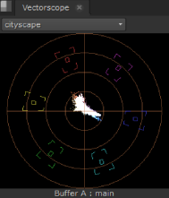
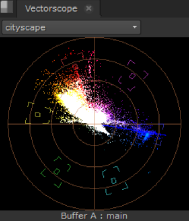
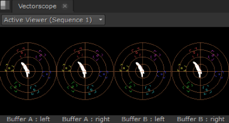

内容菜单 窗户 > 新范围 > 向量 显示当前帧的颜色、饱和度和色调信息。与色轮类似，矢量范围从中心向外以径向方式显示信息。数据跨度离中心越远，饱和度就越大。
在左边的图像中，你可以看到所代表的框架主要包含黄色和红色，但是这些值不是过饱和的。右边的图像代表一个严重饱和的帧。请注意，向范围边缘分布的红色痕迹溢出通过目标 (突出显示的正方形)。
|
 |
 |
| 正常饱和。 | 高饱和度。 |
提示: 您可以通过按住来平移视图区域 Alt ,或鼠标中键，并在面板中拖动。
还有一个 观众 上的选择控制 Vectorscope 标签:
• 观众 选择 -如果您打开了多个查看器，请使用下拉菜单将矢量范围输出与所需的查看器相关联。
默认值, 主动 观众 ,自动显示您选择的最后一个查看器的详细信息。
• 当前视图 -描述当前显示在范围中的视图，无论是 A 或 B 缓冲区还是视图。视图默认为 主要 ,除非 主要 已在多视图脚本或项目中被替换。
根据您激活的查看器工具和视图，您可以同时显示最多四个范围。
例如，有两个立体声读取节点，每个输入缓冲区中有一个, 擦拭 和 Side by Side 活动时，范围显示如下所示:

|
|